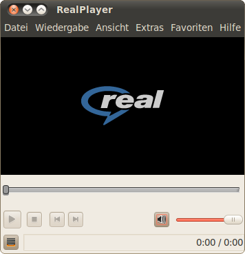

RealPlayer
Archivierte Anleitung
Dieser Artikel wurde archiviert, da er - oder Teile daraus - nur noch unter einer älteren Ubuntu-Version nutzbar ist. Diese Anleitung wird vom Wiki-Team weder auf Richtigkeit überprüft noch anderweitig gepflegt. Zusätzlich wurde der Artikel für weitere Änderungen gesperrt.
Zum Verständnis dieses Artikels sind folgende Seiten hilfreich:
Der RealPlayer  von Real Networks ist ein Programm zum Abspielen von Real Media-Formaten (.rm) Diese werden hauptsächlich für Streaming-Video-Dateien im Internet sowie für Streaming-Audio (Musikbeispiele) z.B. bei Amazon genutzt.
von Real Networks ist ein Programm zum Abspielen von Real Media-Formaten (.rm) Diese werden hauptsächlich für Streaming-Video-Dateien im Internet sowie für Streaming-Audio (Musikbeispiele) z.B. bei Amazon genutzt.
Installation¶
Der RealPlayer für Linux wurde offiziell eingestellt. Die ehemalige Downloadseite  verweist stattdessen auf den Helix Player. Von der älteren Version 11 existieren allerdings noch Fremdpakete
verweist stattdessen auf den Helix Player. Von der älteren Version 11 existieren allerdings noch Fremdpakete  [1] für 32-Bit Systeme in verschiedenen Sprachen.
[1] für 32-Bit Systeme in verschiedenen Sprachen.
Hinweis!
Fremdsoftware kann das System gefährden.
Der RealPlayer ist anschließend im Menü unter "Multimedia -> RealPlayer 11" zu finden. Außerdem kann er über den Befehl realplay gestartet werden.
64-bit¶
Die Entwickler des Helix Player empfehlen die Installation aus dem Quelltext.
|  |
| RealPlayer 11 Gold |
Benutzung¶
Beim ersten Start wird der RealPlayer vorkonfiguriert. Unter anderem kann hier ein Test der Internetverbindung durchgeführt werden. Außerdem kann man hier einstellen, ob auf Updates geprüft werden soll (ob dies funktioniert, wurde noch nicht getestet) und ob Mozilla-Hilfsprogramme konfiguriert werden sollen. Wird diese Option ausgewählt, dann wird der RealPlayer in die Mozilla-Programme, z.B. den Browser Firefox integriert und zum Abspielen der entsprechenden Real-Media Dateien verwendet.
Das deutschsprachige Menü ist weitgehend selbsterklärend. Über "Extras -> Plug-Ins" kann man sehen, welche Formate von RealPlayer unterstützt werden. Wer es nicht gerne sieht, dass die Software Daten an den Hersteller sendet, der sollte die entsprechenden Haken unter "Extras -> Einstellungen -> Internet" herausnehmen.
Problemlösungen¶
RealPlayer startet nicht¶
Bei Spracheinstellungen, die nicht auf UTF-8 basieren, startet der Realplayer aufgrund eines GTK+-Fehlers nach der Installation nicht. Um das Problem zu beheben, muss entweder die Sitzung auf "UTF-8" eingestellt werden (das sollte sie ohnehin sein), oder das Startup-Skript des RealPlayer editiert [2] (Root-Rechte [3] nötig!) werden. Dieses findet sich in der Regel unter /opt/real/RealPlayer/realplay oder /usr/bin/realplay.
Hier sucht man die Zeile
# Bugbuggy has been causing a lot of trouble with desktop stability. Disable it.
und fügt darüber den Befehl
export LANGUAGE=en_US.UTF-8 ein.
Anschließend ist das Problem gelöst. Eine weitere Problemquelle kann sein, dass realplay nicht gefunden wird. Dann hilft folgender Befehl weiter:
sudo ln -s /opt/real/RealPlayer/realplay /usr/local/bin
Ruckeln bei der Wiedergabe von Dateien¶
Bei der Wiedergabe von Dateien, insbesondere bei Internetstreams, tritt manchmal das Problem auf, dass die Wiedergabe ruckelig ist bzw. öfter stockt. Dieses Problem lässt sich evtl. durch die Installation von alsa-oss beheben.
Anschließend öffnet man die Datei /usr/bin/realplay mit einem Editor mit Root-Rechten. Nun sucht man den Abschnitt
while /bin/true;do # Restart the player if exit code is 10 $REALPLAYBIN "$@"
der sich fast am Ende befindet und ändert ihn in diesen um:
while /bin/true;do # Restart the player if exit code is 10 aoss $REALPLAYBIN "$@"
Hierbei wird lediglich das Wort aoss und ein Leerzeichen ergänzt. Zum Schluss muss die Datei noch gespeichert werden. Nun sollten sich alle Dateien ruckelfrei abspielen lassen.
Kein Ton bei Streams¶
64-Bit-System¶
Wenn man die 32-bit-Version unter einem 64-Bit-System installiert hat, muss man evtl. noch das Paket installieren, das im Wiki-Artikel alsa-oss genannt wird. Außerdem sollte man im Real-Player unter "Extras -> Einstellungen -> Hardware" bei PCM-Gerät "pcm.default" eintragen.
Bild aber kein Ton¶
Tritt das Problem auf, dass der Realplayer bei Internetstreams zwar das Bild, jedoch keinen Ton ausgibt, so kann man dies evtl. auch durch die Installation von alsa-oss lösen.
Anschließend öffnet man die Datei /etc/firefox/firefoxrc mit einem Editor mit Root-Rechten. Hier ersetzt man
FIREFOX_DSP="none"
durch
FIREFOX_DSP="aoss"
und speichert die Datei. Jetzt benutzt Firefox immer ALSA zur Audioausgabe.
Das Amazon-Codec Problem¶
Beim Internethändler Amazon konnte man früher von vielen CDs Musikbeispiele anhören. Amazon verwendet allerdings für ältere Songs einen Codec ("dnet-codec"), den Real Networks seit der Version RealPlayer 10 nicht mehr unterstützt. Dies wird auch nach der Installation von RealPlayer bei dem Versuch ein älteres Amazon Musikbeispiel anzuhören angezeigt:
Der Inhalt, den Sie wiedergeben möchten, verwendet einen veralteten Audio-Codec, der nicht mehr unterstützt wird. Bitte fragen Sie Ihren Inhaltsanbieter nach einem aktuellen Codec.
Neuere Songs machen in der Regel keine Probleme, da Amazon dort bereits einen neueren Codec verwendet. Abhilfe schafft die Installation der w32codecs oder die Verwendung älterer Codecs von MPlayer.
W32codecs¶
Die Codecs finden sich nun im Verzeichnis /usr/lib/win32. Von dort müssen die beiden Dateien dnet.so.6.0 und ddnt.so.6.0 in das Codec-Verzeichnis des RealPlayers kopiert werden. Im Normalfall also nach /usr/lib/realplay-VERSION/codecs. Der Pfad zum RealPlayer kann je nach verwendeter Installationsart variieren. Für diese Aktion werden Root-Rechte benötigt.
sudo cp /usr/lib/win32/dnet.so.6.0 /usr/lib/realplay-VERSION/codecs sudo cp /usr/lib/win32/ddnt.so.6.0 /usr/lib/realplay-VERSION/codecs
MPlayer¶
Sofern das Programm bereits installiert ist genügt es die Codecs zu verlinken[4] - alternativ die Codecs installieren:
cd /opt/real/RealPlayer/codecs sudo ln -s /usr/lib/win32/ddnt.so.6.0 sudo ln -s /usr/lib/win32/dnet.so.6.0 sudo ln -s dnet.so.6.0 dnet.so
Es genügt aber auch, nur die vom RealPlayer 9 zu verwenden.
RealPlayer 9¶
Von mplayer.hu das Archiv rp9codecs-20050115.tar.bz2 herunterladen und entpacken [4]. Den Ordner rp9codecs-20050115 öffnen und die benötigten Codecs, mit Root-Rechten, nach /opt/real/RealPlayer/codecs kopieren:
sudo cp ddnt.so.6.0 /opt/real/RealPlayer/codecs sudo cp dnet.so.6.0 /opt/real/RealPlayer/codecs sudo ln -s /opt/real/RealPlayer/codecsdnet.so.6.0 /opt/real/RealPlayer/codecsdnet.so
Links¶
Wie zähme ich den RealPlayer?
- Tipps zur Konfiguration des RealPlayersRealPlayer 10 und die "veralteter Codec" Nachricht
- aus dem fedorawiki.de
- Erstellt mit Inyoka
-
 2004 – 2017 ubuntuusers.de • Einige Rechte vorbehalten
2004 – 2017 ubuntuusers.de • Einige Rechte vorbehalten
Lizenz • Kontakt • Datenschutz • Impressum • Serverstatus -
Serverhousing gespendet von